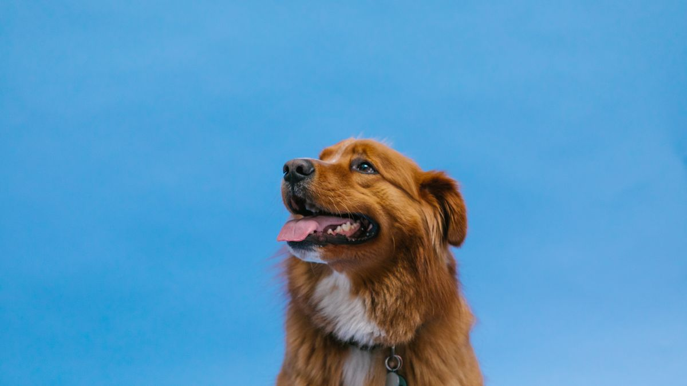

돌아왔을 때 달라진 식사
결혼식 1박 2일을 다녀온 집에서, 돌아오자마자 사료 그릇이 비어 있고 화장실 패드가 네 장 쌓여 있었습니다. 펫시터에게 맡겼다고 했는데, 급여 시간은 적혀 있었고 약 먹이는 시간은 빠져 있었습니다. 반려동물은 크게 다치지 않았지만, 그다음 주까지 식욕이 들쭉날쭉했습니다.
이 글은 분리 불안 치료나 의료 처방을 다루지 않습니다. 하룻밤 이상 떠날 때 집에 두거나 맡기기 전에 정리할 항목을 비교 형식으로 정리합니다. 짧은 외출 연습은 혼자 있는 시간 연습 글을 먼저 보세요.
왜 미리 준비할까
1박 이상 외출은 '조금 더 긴 외출'이 아닙니다. 급여·배변·약·산책 담당이 바뀌고, 집 안 소음·조명 패턴도 달라집니다. 준비 없이 떠나면 돌아온 뒤 '누가 언제 뭘 했는지'를 추측하게 됩니다.

준비의 목표는 완벽한 돌봄이 아니라 예측 가능한 루틴을 유지하는 것입니다. 인수인계 한 장에 급여 시간·약 이름·비상 연락처·집 열쇠 위치만 있어도, 담당이 바뀌어도 같은 순서로 반복하기 쉬워집니다.
돌봄 방식, 이렇게 vs 저렇게
지인에게 부탁은 비용이 적지만, 우리 집 루틴을 모르는 경우가 많습니다. 인수인계 한 장+1회 사전 방문은 번거롭지만 급여·산책 실수를 줄입니다.
펫시터 방문은 하루 2~3회 방문으로 산책·급여가 가능하지만, 밤 시간 공백이 생깁니다. 집에 두기+자동급식기는 밤까지 끊기지 않지만, 배변·응급 대응은 약합니다.
펫호텔·동물병원 위탁은 24시간 관리에 가깝지만, 낯선 환경 스트레스가 있습니다. 짧은 외출 연습 후 위탁은 비용이 들어도 갑작스러운 환경 변화를 줄이는 데 도움이 되는 경우가 있습니다.

개체·연령·건강 상태마다 적합한 방식이 다릅니다. '가장 편한 방법'보다 '우리 집 루틴을 가장 덜 깨는 방법'을 기준으로 고르는 편이 낫습니다.
인수인계 한 장
아래 항목을 A4 한 장·메모 앱 한 페이지에 모으세요. 사진 2장(사료 그릇 위치·약 봉투)을 붙이면 더 명확합니다.
- 기본 정보: 이름·나이·체중·중성화 여부·알레르기
- 급여: 브랜드·하루 그램·시간(아침 7시/저녁 7시)·간식 규칙
- 약: 이름·용량·시간·먹이는 방법(간식에 섞기 등)
- 산책: 목줄 종류·회피할 대상(큰 개·오토바이)·배변 패드 위치
- 비상: 주 수의사·24시 병원·보험·집주인 연락처
- 집: 열쇠·비밀번호·쓰레기 배출·환기·CCTV 유무
- 행동: 낯선 사람·문 소리·혼자 있을 때 습관(짖음·은신 위치)

인수인계는 '완벽한 설명서'가 아니라 같은 질문을 반복하지 않게 하는 메모입니다. 담당자가 바뀌어도 7번 항목(행동)만 읽으면 오늘 밤 대응이 쉬워집니다.
집에 둘 때 준비
집에 두기를 선택했다면, 자동급식기·급수기·배변 패드·CCTV를 점검하세요. 자동급식기는 외출 1주 전부터 시범 운영해 오작동을 잡습니다. 급수기 물통은 가득 채우고, 필터 교체일을 스티커로 붙입니다.
배변 패드는 평소 사용량의 1.5배를 깔아 두세요. 고양이는 화장실을 하나 더 열어 두는 집이 많습니다. 창문·발코니 잠금, 전선·쓰레기통·작은 물건은 외출 전 5분 점검합니다.
밤중 소음이 부담인 개체에게는 낮은 볼륨의 라디오·TV를 켜 두는 방법도 있습니다. 반려동물이 소리에 민감하면 무음부터 시작하세요.
돌아온 뒤 30분 안에 식욕·배변·수면 자세를 확인하고, 평소와 다르면 인수인계 메모와 함께 한 줄 기록합니다. 48시간 같은 패턴이면 상담을 검토하세요.
우리 집에 맞게
1박 외출은 '몇 시간 버티나'보다 '누가·몇 번·어떤 순서로 돌보나'가 먼저입니다. 지인·펫시터·집에 두기 중 하나를 고른 뒤, 그 방식에 맞는 체크리스트만 고정하세요.
소형견·고령견은 하루 3회 방문이나 위탁을 검토하는 집이 많습니다. 고양이는 하루 2회 방문+자동급식기 조합이 흔합니다. 다견 가정은 그릇·산책을 분리해 인수인계에 적으세요.
약을 먹는 개체는 '집에 두기만'은 위험할 수 있습니다. 약 시간에 반드시 사람이 들어오는 방식을 우선 검토하세요.
외출 전날 루틴을 바꾸지 마세요. 산책·급여 시간을 2시간 이상 밀면, 돌아온 뒤 관찰이 어려워집니다.
펫시터·지인에게는 '사진 1장 보내기' 규칙을 정하세요. 식사 후·산책 후 사진 한 장이면 돌아와서 추측할 일이 줄어듭니다.
열쇠·비밀번호·비상 연락처는 인수인계 한 장과 별도로 가족 단톡방에도 올려 두세요. 담당자가 바뀌어도 같은 정보를 볼 수 있습니다.
이번 주 1박 외출 준비 체크리스트입니다. 방식을 정한 뒤 해당 항목만 골라 쓰세요.
- 돌봄 방식(지인·펫시터·집에 두기·위탁)을 먼저 정했습니다.
- 인수인계 한 장에 급여·약·비상연락·행동 습관을 적었습니다.
- 자동급식기·급수기를 외출 1주 전부터 시범 운영했습니다.
- 배변 패드·화장실을 평소의 1.5배로 준비했습니다.
- 창문·전선·쓰레기통을 외출 전 5분 점검했습니다.
- 담당자에게 식사·산책 후 사진 1장 규칙을 공유했습니다.
- 외출 전날 산책·급여 시간을 2시간 이상 바꾸지 않았습니다.
- 돌아온 뒤 30분 안에 식욕·배변·수면을 확인했습니다.
1박 외출은 인수인계 한 장과 시범 운영이 절반입니다. 방식을 먼저 고르고, 약·급여·비상연락을 한 곳에 모으세요. 자동급식기는 일주일 전부터, 배변·화장실은 여유분을 깔아 두면 돌아온 뒤 정리가 쉬워집니다.
첫 1박은 가까운 곳·짧은 일정으로 시험해 보세요. 멀리 떠나기 전에 '인수인계가 통하는지' 확인하는 주가 있습니다.
가족 합의가 안 되어 있다면 입양 전 가족 합의 글의 역할 분담 표를 돌봄 담당에 맞게 바꿔 쓰세요.
비교하며
펫시터 비용을 아끼려다 약 시간을 빠뜨린 집을 봤습니다. 인수인계 한 장은 비용이 아니라 사고 예방입니다.
비교해 보면 '집에 두기만'이 편해 보여도, 약·배변·응급 대응이 필요한 개체에는 맞지 않는 경우가 많습니다. 우리 집에 필요한 방문 횟수부터 정해 보세요.
이 글은 전문 치료를 대체하지 않습니다. 반복되는 파손·식욕 급감·배변 이상은 메모를 들고 상담을 검토하세요.
초보자가 자주 실수하는 포인트
- 외출 전날 밤에만 인수인계 작성
- 약 시간 없이 집에 두기만 선택
- 자동급식기 당일 첫 사용
- 펫시터에게 구두로만 설명
- 돌아온 뒤 식욕·배변 변화 무시
체크리스트
- 돌봄 방식 먼저 결정
- 인수인계 한 장 작성
- 자동급식기 1주 전 시범
- 배변·화장실 여유분 준비
- 돌아온 뒤 30분 관찰
자주 묻는 질문
- 며칠까지 집에 두어도 될까요?
- 개체·연령·건강·약 복용 여부마다 다릅니다. 약이 있거나 배변 관리가 필요하면 방문·위탁을 검토하고, 짧은 외출 연습으로 평소와 비슷한지 먼저 확인하세요.
- 펫시터와 지인 중 무엇이 나을까요?
- 비용·신뢰·우리 집 루틴 숙지도를 함께 봅니다. 지인이라도 인수인계 한 장과 1회 사전 방문이 있으면 실수가 줄어드는 경우가 많습니다.
- alone-time-practice 글과 무엇이 다른가요?
- 혼자 있는 시간 연습은 2~30분 단계 외출입니다. 이 글은 1박 이상 떠날 때 돌봄 방식 선택·인수인계·집에 둘 때 준비를 다룹니다. 연습 후 1박 준비 순서가 자연스럽습니다.
이 글은 초보자 기준으로 이해하기 쉽게 정리되었으며, 내용은 운영 과정에서 순차적으로 보완될 수 있습니다. 수의사 등 전문가의 진단·처치를 대체하지 않습니다.